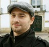

Members
Mgr. Josef Urban, Ph.D.department: Czech Technical University in Prague / CIIRCe-mail: Josef.Urban (at) gmail.com www: http://people.ciirc.cvut.cz/~urbanjo3 research areas: Automated Reasoning, Inductive Reasoning, Formalization and Computer-verification of Mathematics DBLP |
|
Prof. Robert Veroff, Ph.D.department: University of New Mexico / School of Engineering, Czech Technical University in Prague / CIIRCe-mail: veroff (at) cs.unm.edu www: http://www.cs.unm.edu/~veroff research areas: Automated Theorem Proving, Mathematical Structures, Abelian Inner Mappings |
|
Chad E. Brown, Ph.D.department: Czech Technical University in Prague / CIIRCe-mail: not applicable www: wikipedia research areas: Higher-Order Theorem Proving, Semantics of Higher-Order Logic, Generalizations of Henkin Models, Extensionality Principles, Set Comprehension Principles, Cut-Elimination, Completeness and Independence Results, Automatic and Interactive Theorem Proving, Proof Checking, Proof Representations and Transformations |
|
Mgr. Jan Jakubův, Ph.D.department: Czech Technical University in Prague / CIIRCe-mail: jakubuv (at) gmail.com www: http://people.ciirc.cvut.cz/~jakubja5 research areas: Artificial Intelligence, Machine Learning, Automated Reasoning, Formalization of Mathematics, Functional Programming, Distributed Computing, Process Calculi, Type Systems, Automated Planning, Multiagent Systems, Multiagent Planning, Air Traffic Control DBLP |
|
Mgr. Karel Chvalovský, Ph.D.department: Czech Technical University in Prague / CIIRCe-mail: karel (at) chvalovsky.cz www: http://karel.chvalovsky.cz/ research areas: Automated Theorem Proving, Logic in Computer Science, Algorithmic Learning Theory |
|
|
 |
Mgr. Mikoláš Janota, Ph.D.department: University of Lisbon / IST, Czech Technical University in Prague / CIIRCe-mail: mikolas.janota (at) gmail.com www: http://sat.inesc-id.pt/~mikolas/ research areas: Automated Reasoning DBLP |
RNDr. Martin Suda, Ph.D.department: Czech Technical University in Prague / CIIRCe-mail: Martin.Suda (at) cvut.cz www: http://people.ciirc.cvut.cz/~sudamar2/ research areas: Automated Reasoning, Linear Temporal Logic and Symbolic Reachability Analysis, Hardware Verification, Automated Planning, Quantified Boolean Formulas | |
Thibault Gauthier, Ph.D.department: Czech Technical University in Prague / CIIRCe-mail: thibault_gauthier (at) hotmail (dot) fr research areas: Automation in Interactive Theorem Proving |
|
Mgr. Bartosz Pawel Piotrowskidepartment: Czech Technical University in Prague / CIIRCe-mail: piotrbar (at) ciirc.cvut.cz research areas: Automated Theorem proving |
|
Zarathustra Goertzel, M.Sc.department: Czech Technical University in Prague / CIIRCe-mail: zariuq (at) gmail (dot) com research areas: Automated Theorem Proving, Artificial General Intelligence, Automated Reasoning, Inference Guidance, Knolwedge Graph Learning, Representation Learning |
|
Lasse Blaauwbroek, M.Sc.department: Czech Technical University in Prague / CIIRCe-mail: lasse.blaauwbroek (at) cvut.cz research areas: Interactive Theorem Proving, Machine Learning, Type Theory, Programming Languages |
|
Qingxiang "Shawn" Wang, M.Sc.department: Czech Technical University in Prague / CIIRCe-mail: shawn.wangqingxiang (at) gmail.com research areas: Auto-formalization of Mathematics |
|
Mgr. Filip Bártekdepartment: Czech Technical University in Prague / CIIRCe-mail: filip.bartek (at) cvut.cz research areas: Saturation-based Automated Theorem Proving, Machine Learning |
Alumni
Yutaka Nagashima, M.Sc.department: Czech Technical University in Prague / CIIRCe-mail: research areas: Interactive Theorem Proving |
|
RNDr. Jiří Vyskočil, Ph.D.department: Czech Technical University in Prague / CIIRCe-mail: jiri.vyskocil (at) gmail.com www: http://people.ciirc.cvut.cz/~vyskoji1 research areas: Automated Reasoning DBLP |
|
Grzegorz Bancerek, Ph.D.department: Czech Technical University in Prague / CIIRCe-mail: not applicable www: http://math.uwb.edu.pl/~bancerek/ research areas: Formalization of Mathematics, Mizar, Text Generation and Mechanical Translation, Algebraic Approach to Categories and Logic DBLP |